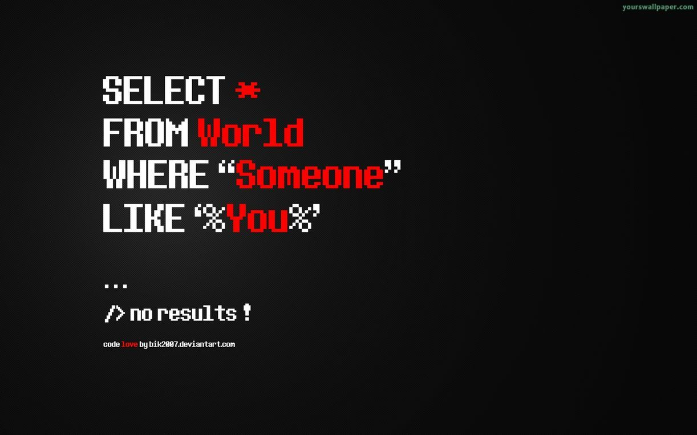

00. Link - WebAssembly’s post-MVP future: A cartoon skill tree
01. Link - Property order is predictable in JavaScript objects since ES2015
02. Link - Understanding Currying in JavaScript
03. Link - Is WebAssembly faster than JavaScript?
04. Link - Where Vim Came From
05. Link - Option/Maybe, Either, and Future Monads in JavaScript, Python, Ruby, Swift, and Scala
